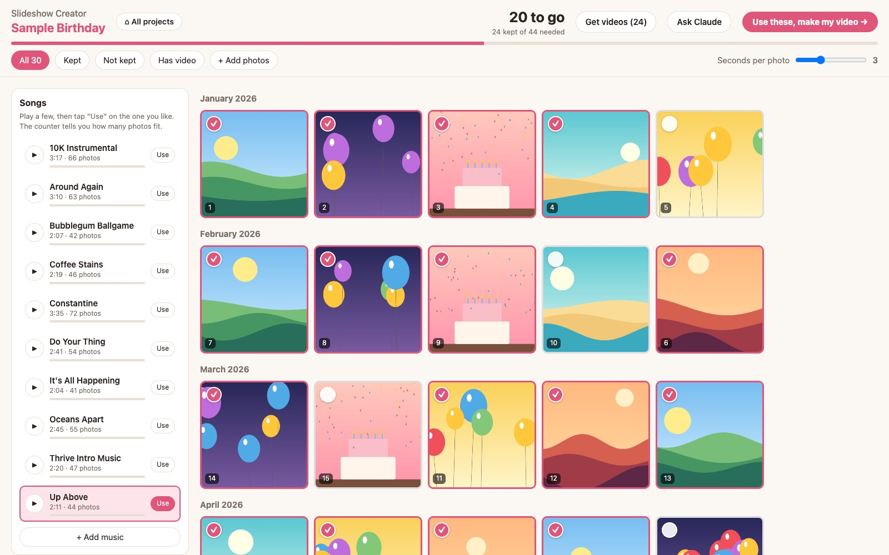
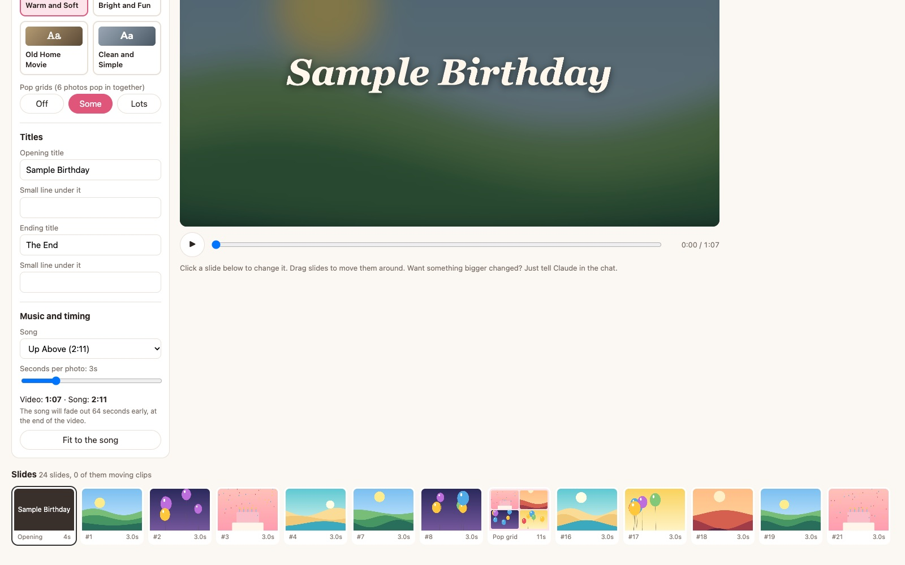
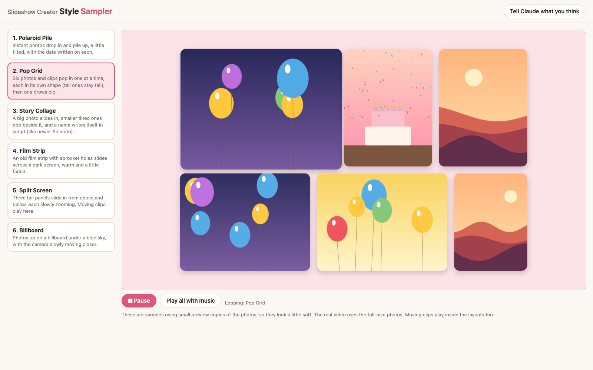

Slideshow Creator
My own video maker. I pick photos, swap in the short moving clips from iPhone Live Photos, choose a song and a look, add titles, and press Finish. A few minutes later there is a real video file.
46 seconds, music and no talking. The written version is below.
I wanted a birthday video for my daughter: about three minutes of her year, set to a song. There were over 500 photos to pick from.
The online slideshow sites want you to upload everything. I did not want family photos of a child sitting on someone else's servers.
A small app that runs on my own Mac. Photos never leave it, and the finished video saves right there.
It started as a simple photo picker. While using it I kept asking Claude for more, and it turned into a tool I can use for years, for any slideshow.
Shown with a made-up sample project, so no real photos appear here.

Tick the ones to keep. Try a few songs, and the counter at the top says how many photos fit that song.

Pick one of four looks, write the titles, fit it to the song, and watch a live preview. Drag slides to reorder, add a caption, trim a clip or slow it down.

Six photos and clips pop in together, each in its own shape, so tall photos stay tall and faces never get cut off.
A small local app that opens in the browser. Nothing is online.
Claude downloads just the photos I ask about from Google Photos, and the app matches each clip to its photo by the time it was taken.
A free video tool turns every slide into a piece, joins them with fades, and lays the song under it.
Buttons in the app open a fresh Claude chat that already knows the project, so each change starts clean.